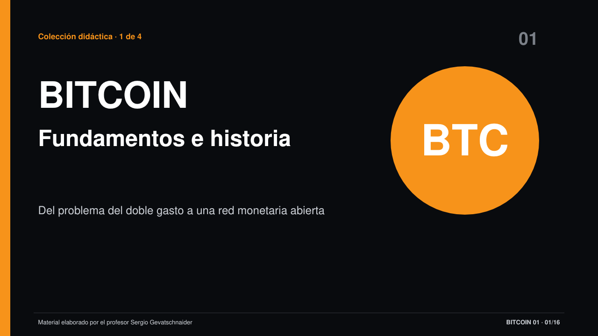

Módulo 9 · Experiencia de aprendizaje independiente
Bitcoin
Del problema del doble gasto a las claves, los UTXO, la minería, el consenso, la economía y la escalabilidad. El módulo combina cuatro clases, experimentos manipulables y recursos de estudio que funcionan directamente en el navegador.
4presentaciones
64diapositivas
12simulaciones
94términos desarrollados
20preguntas con respuestas
15recursos integrados
Progreso local
Tu recorrido queda guardado en este navegador
0 de 15 recursos completados.
Ruta didáctica
De la autorización criptográfica al equilibrio económico
La secuencia separa con precisión las funciones de wallets, nodos y mineros, y conecta las reglas técnicas con sus incentivos y límites.
- 01Fundamentos e historiaProblema del doble gasto, red P2P, actores, validación y prueba de trabajo.Ver clase 1
- 02Claves, wallets y UTXOAutorización, direcciones, custodia, transacciones, cambio, Script y privacidad.Ver clase 2
- 03Propagación y conflictosMempool, doble gasto, reorganizaciones, Sybil y selección del historial.Simular conflicto
- 04Bloques, minería y consensoEncabezado, Merkle, target, tiempo aleatorio, dificultad, pools y amenazas.Ver clase 3
- 05Economía, seguridad y escalabilidadEmisión, comisiones, presupuesto de seguridad, custodia, SegWit, Taproot y capas.Ver clase 4
- 06Integración y evaluaciónGlosario activo y veinte preguntas con respuestas ampliamente desarrolladas.Comenzar cuestionario
Colección didáctica · 4 clases
64 diapositivas sin notas del orador
El visor propio permite cambiar de deck, navegar con teclado, usar reproducción automática, abrir en pantalla completa y descargar cada PPTX.

Abrir visor completoBiblioteca del módulo
Clases, simulaciones y guías de estudio
Colección didáctica00
Visor de presentaciones
Recorré las cuatro clases, 64 diapositivas, descargas PPTX y enlaces de Google Slides desde un único visor.
Simulación01
Viaje de una transacción
Seguí un pago desde su construcción y propagación hasta la inclusión en un bloque y sus confirmaciones.
Simulación02
Doble gasto y reorganización
Compará ramas competidoras y observá cómo el trabajo acumulado cambia el historial confirmado.
Simulación03
Sybil y prueba de trabajo
Experimentá por qué contar identidades no protege una red abierta y cómo PoW introduce un costo externo.
Laboratorio04
Claves, direcciones y wallet HD
Conectá entropía, clave privada, clave pública, dirección, seed y rutas de derivación.
Constructor05
Constructor UTXO
Seleccioná entradas, definí salidas y calculá cambio y comisión sin un saldo global.
Laboratorio06
Bitcoin Script paso a paso
Ejecutá condiciones de gasto sobre una pila y separá bloqueo, datos de desbloqueo y validación.
Análisis08
Privacidad y heurísticas
Observá cómo entradas comunes, direcciones de cambio y datos externos pueden vincular actividad.
Simulación09
Minería y prueba de trabajo
Modificá el encabezado, buscá hashes bajo un target y distinguí validación de competencia minera.
Laboratorio visual10
Árbol de Merkle
Construí una raíz, verificá una prueba de inclusión y compará su crecimiento logarítmico.
Simulación estadística11
Tiempo entre bloques
Generá esperas aleatorias y comprobá por qué diez minutos es un promedio, no un horario.
Simulación12
Ajuste de dificultad
Alterá hashrate y duración de la ventana para estudiar cómo el protocolo reajusta el target.
Simulación13
Minería individual y pools
Compará ingresos irregulares con reparto de pruebas parciales y analizá el costo de la coordinación.
Guía de estudio14
Glosario interactivo
Consultá 94 términos con función, ejemplo, relaciones y modo de estudio activo.
Evaluación formativa15
Cuestionario de Bitcoin
Respondé veinte preguntas y utilizá las explicaciones desarrolladas como guía de estudio.
No se encontraron recursos.Probá con otro término o quitá los filtros.
Alcance
Modelos educativos, reglas verificables
Las simulaciones simplifican parámetros y procesos para hacer visibles relaciones causales. No deben utilizarse para custodiar claves reales, construir transacciones de producción ni estimar rendimientos financieros.